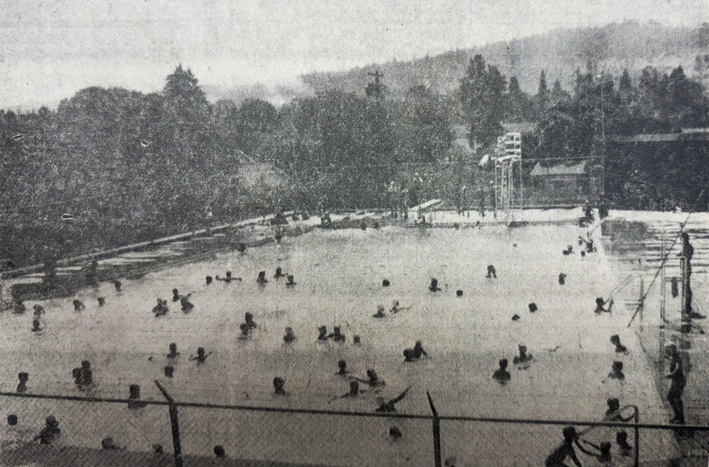
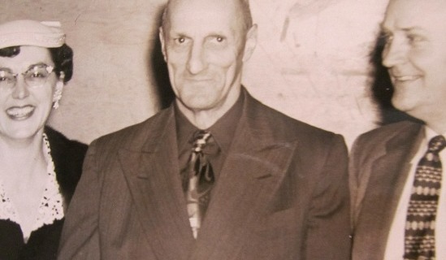
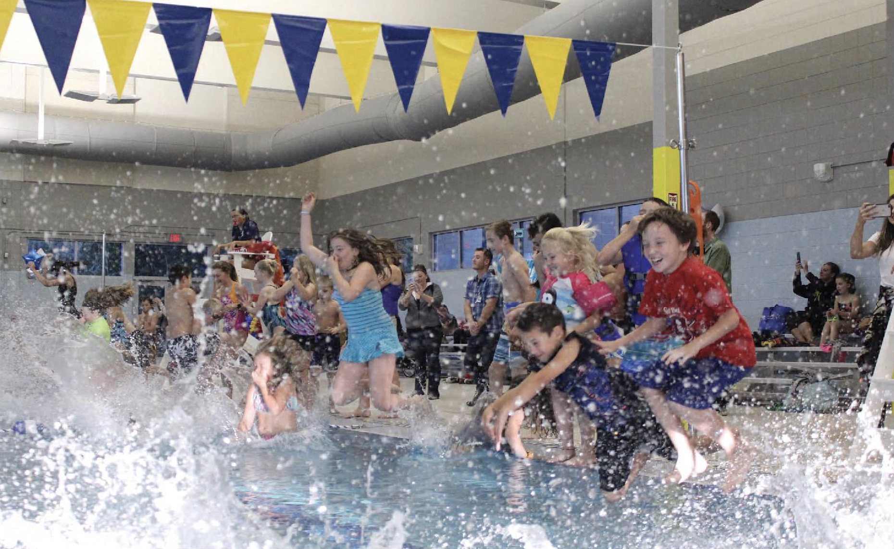
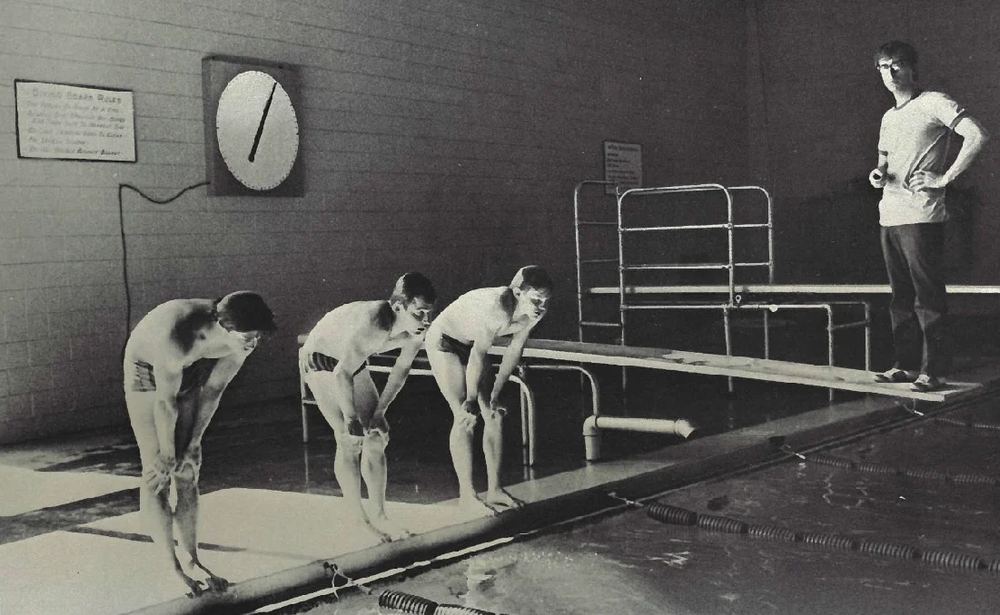
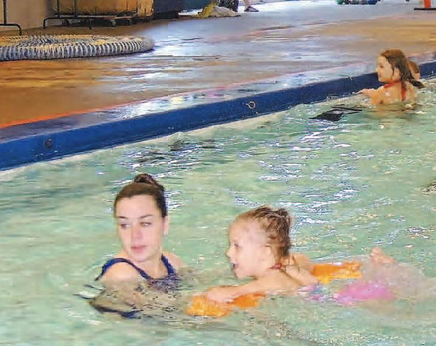

Since 1955
Local support for our community pool
History
Seven decades of community support
From the first outdoor pool to today's aquatic center-built and sustained through local generosity and partnership.
City + school district partnership
A unique model of collaboration
2019 renovation
Added a therapy pool and modern amenities
$75,000 annual city support
Funding for programs and operations
Overview
For more than seven decades, Cottage Grove residents have supported a local pool. Since 1955, citizen financial donations, city contributions, and adopted bond measures have paid for initial construction, improvements over time, and a major aquatic center renovation in 2019 that added a therapy pool.
Continued success comes by way of a unique and model collaboration between the City of Cottage Grove and the South Lane School District (SLSD). While SLSD owns and manages the WDAC facility to facilitate student swim lessons and school athletics, the city helps fund programs for the wider community, as do revenues from user fees.
City + School District partnership
- Prior to 2019, the city paid SLSD $50,000 each year for adult lap swim, recreation, and summer programs.
- Since the 2019 WDAC renovation, the city's annual $75,000 contribution helps underwrite community programs in both the WDAC's lap pool and newly built therapy pool, which replaced the outdated therapy pool the city had maintained in a separate facility.
- Patrons also contribute to SLSD through WDAC member dues and per-visit user fees and/or insurance payments.
Download supporting graphs
These PDFs are linked from the Docs page.
Timeline of fiscal support
Milestones, management leadership, and funding actions that kept WDAC serving Cottage Grove across seven decades.
Milestones
Management
Funding
-
1953-54Funding
Two local drownings spurred residents to launch a fund-raising campaign to build an outdoor pool. The Daugherty family donated substantially to reach the campaign goal.
-
1955Milestone
Original outdoor pool is completed. Legendary track coach Wally Ciochetti is hired as first supervisor, with Coach Ron Pupke helping to manage it.
-
1965Milestone
Donations were raised to enclose the pool, enabling year-round operations and launching school-based swimming lessons and aqua-athletic teams.
-
1966-1996Management
Coach Bud Taylor led Cottage Grove High School Lions swimming and water polo teams to nearly a dozen state championships.
-
1999-2000Funding
After an initial $250,000 donation to build a warm water therapy pool in the City of Cottage Grove's Community Center, Donna and Doyle Shepherd donated another $250,000 with the understanding the therapy pool would be preserved.
-
2016Milestone
Local school district voters approved a bond measure to renovate the WDAC.
-
2016-2018Funding
Cottage Grove citizens and organizations pledged about $345,000 to augment the bond funding.
-
2018-2019Milestone
The current aquatic center is renovated, featuring an enlarged lap pool and a new 42-person capacity therapy pool.
-
2025Funding
Friends of WDAC members donated about $8,000 to purchase a back-up pump, pool deck scrubber, and wave-dampening lane lines to benefit community and school use.
-
2026Funding
Friends of WDAC members donated about $11,000 to underwrite WDAC staff training, and to repair the lap pool filtration system and the therapy pool chemical pool sensor equipment. Friends also helped raise about $2,500 for a banner and plaque reflecting the renamed lap pool to the Coach Bud Taylor Competition Pool.
Historic photos + visuals




